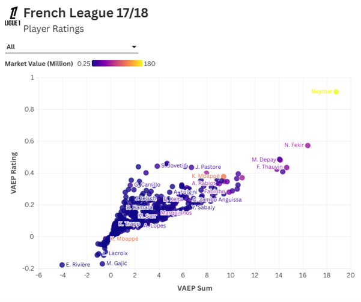
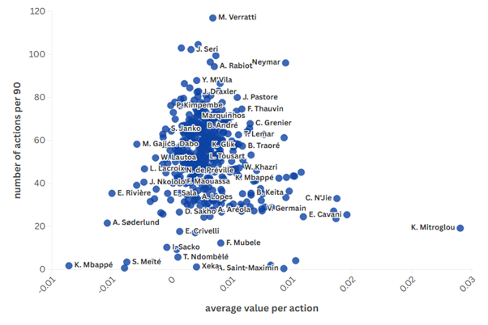
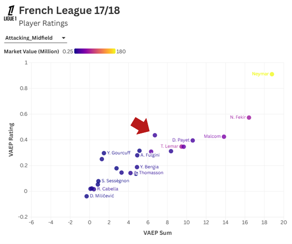
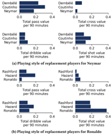

During the summer 2025 transfer window, Premier League clubs spent a record-breaking £3.19 billion on new signings. With players commanding ever-larger fees, clubs face higher risks. This article examines methods for evaluating a player's value based on their ‘on-ball actions’ using XGBoost.
However, this follows an upward trend far exceeding regular inflation in recent years. With players commanding ever-larger fees, clubs face higher risks from failed transfers. As a result, ensuring that money is spent wisely has become even more crucial.
Valuing actions by estimating probabilities (VAEP) is a well-established method to evaluate a players match contribution. Under VAEP, a value between -1 and +1 (-1 being an action that causes a 100% probability of conceding a goal, and +1 being 100% probability of scoring a goal) is assigned to each player's ‘on-ball’ action by estimating how much it increases or decreases the likelihood of the team scoring or conceding a goal in the near future.
For each action, two probabilistic models calculate the change in probability of scoring and conceding from a favourable or unfavourable outcome (for example, a missed pass causes the opponents to gain possession in the attacking third) based on the game state represented by the 3 last actions. This allows analysts to objectively measure the impact of individual player actions beyond traditional metrics like goals or shots which account for less than 2% of all actions in a football game.
"To estimate these probabilities, we train a machine learning model. In this case, XGBoost (extreme gradient boosting) is used... Used for both regression and classification, it boasts high predictive power and speed."
As a probabilistic classifier designed to estimate whether an action increases or decreases the probability of scoring, the model primarily made use of three key categorical variables: the type of action performed, the body part used to execute the action, and the result of the action itself. These core features provided a solid foundation for evaluating the impact of each on-ball event.
To further improve the model's accuracy and relevance, additional variables were incorporated. These included real-valued features, complex derived characteristics, and contextual information about the game situation such as current scoreline, and minutes played in which each action occurred.
However, there is a trade-off to consider. Introducing too many variables can lead to overfitting, where the model performs exceptionally well during training but fails to generalise its predictions effectively to new, unseen matches.
There are many other ways of valuing player actions:
I chose VAEP because it’s a well-supported open-source model that has an extensive documentation library, with lots of research regarding its applications.
The model uses the publicly available Wyscout match event dataset for training, converted into SPADL format. The French league during the 2017/18 season was used as demonstration. Market value of players was obtained through web scraping ‘Transfermarkt’.

In addition to the VAEP rating, the VAEP sum represents the total value of all on-ball actions attributed to a player throughout the season without per 90 averaging. To maintain reliability, only players who accumulated at least 360 minutes of playing time are included.
Action quality and quantity trade-off: What should be noted is that a high number of actions can result in lower average values per action. To assess this, we plot the average number of actions against the average value to ensure a player isn’t receiving large ratings due to a small sample.


The scatterplot shows us a central dot being a particular outlier compared to his market value; this point is Javier Pastore, a midfielder for PSG. He would later be bought by AS Roma on a five-year contract at 29 years old. The graph allows us to clearly see undervalued players given their contributions during a season.
With hindsight we can say he wasn’t the best signing as he would go on to have limited playing time impacted by chronic injuries requiring surgery. We can firmly say that at the time he was an undervalued player according to the data, but other qualitative factors that aren’t measured by VAEP shouldn’t be overlooked.
When evaluating a potential player acquisition outside your own league, it is crucial to consider the relative strength of both the league and the team the player plays for. Weighted models that account for such differences are especially useful.
With VAEP rating, scouts get a single aggregated metric that combines offensive output and defensive solidity which answers the ultimate question: Is this player a net positive on the pitch?
Clubs are increasingly interested in understanding a player's preferred playing style during the recruitment process. Metrics that assess a player’s ability to perform different types of actions help filter through players that are worth paying extra attention to. For example, we can assess all potential candidates' total dribble value per 90, and total pass value per 90, and see how they stack up against one another.

Performance analysis: With VAEP, analysts can evaluate possession chains to see exactly where value was generated or lost. By evaluating a player’s action and its value added, we can rate players' decision-making compared to their available options. Would they have increased the likelihood of a goal with a lower risk pass?
Coaching and player development: By leveraging VAEP, a club transitions from asking what happened on the pitch to understanding how much it mattered. It allows coaches to show players the objective value of their habits—why progressive carries provide huge value, or why other actions aren’t valued highly.
From the scouting department to financial evaluation, VAEP can also be used to evaluate player wages compared to their on-pitch performance. Are there any current forward players whose transfer fees exceed the value they contribute on the field?